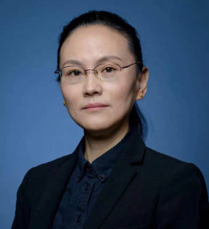

<!DOCTYPE html>
<html>
	<head>
		<meta charset="utf-8">
		<title></title>
		<style >
			table{
				align-items: flex-start;
				vertical-align: super;
				width: 100%;
				margin-top: 50px;
				margin-bottom: 30px;
			}
			td{
				vertical-align: super;
			}
			td{
				padding-bottom: 10px;
			}
			.firstTd{
				width: 20%;
			}
			.secTd{
				width: auto;
			}
			.endTable{
				margin-bottom: 30px;
			}
			.imgCss{
				/* align-items: center; */
				min-width: 150px;
				max-width: 250px;
				width: 60%;
				vertical-align: text-top;
			}
			p{
				text-align: justify;
				text-justify: inter-ideograph;
				-webkit-text-size-adjust: none;
			}
		</style>
	</head>
	<body>
	<!--
		<table>
		<tr>
				<td class="firstTd">
					
				</td>
				<td>
					<h3>Vipul Goyal</h3>
					<strong>Biography:</strong>
					<p>Vipul Goyal is an Associate Professor of Computer Science at CMU and a Senior Scientist at NTT Research, CA. Previously, he was a researcher in the Cryptography and Complexity group at Microsoft Research, India. He received his PhD in Computer Science from University of California, Los Angeles in Dec 2009. He received his B.Tech. in Computer Science from Indian Institute of Technology (BHU), Varanasi.

 

Dr. Goyal is a winner of several honors including a 2019 JP Morgan Faculty award, 2016 ACM CCS test of time award, a Microsoft Research graduate fellowship, and, a Google outstanding graduate student award. He was named to the Forbes magazine 30 under 30 list of people changing science and healthcare in 2013. His research has received media coverage at popular science publications such as MIT technology reviews, Slashdot, and, Nature news. He has given invited lectures at places such as MIT, Princeton, and, IIT Delhi. He has served on program committees of conferences such as Crypto, Eurocrypt and ACM CCS. He has published over 80 technical papers at top conferences in cryptography such as at Crypto, Eurocrypt, STOC, FOCS, and, ACM CCS.

 

He is broadly interested in all areas of cryptography (and in theoretical computer science in general).</P>
					<strong>Title</strong>
				                <p>Fast Communication Efficient Secure Multi-Party Computation</p>
					<strong>Abstract</strong>
					<p>Secure Multi-Party Computation (MPC) is a framework where multiple
						parties collaborate to compute a common function of their interest
						without revealing their private inputs to each other. MPC is a very
						general cryptographic tool and is useful in diverse situations such as
						privacy preserving machine learning, secure auctions, and voting.
						While the feasibility of MPC has been known for several decades, the
						key challenge is making these protocols efficient. In this talk, I will describe some of our recent work in making MPC
						more communication efficient. We focus on the so called information
						theoretic setting where security doesn't rely on unproven
						cryptographic assumptions (such as factoring). Instead we assume that
						a constant fraction of the parties behave honestly. This is natural in
						settings such as Blockchains or voting. We will rely on a tool called
						packed secret sharing which allows one to run the circuit computation
						faster by handling a "batch of gates" at a time instead of a single
						gate.</p>
				</td>
			</tr>
			<tr>
				<td class="firstTd">
					
				</td>
				<td>
					<h3> Shengli Liu</h3>
					<strong>Biography:</strong>
					<p>Shengli Liu is a professor at Shanghai Jiao Tong University. She obtained her bachelor’s, master’s, and doctorate degrees from Xidian University. In 2002, she obtained another doctorate degree from Technische Universiteit Eindhoven, the Netherlands. Since 2002, she has been working in the Department of Computer Science and Engineering, Shanghai Jiao tong University. Her research interest focuses on public-key cryptography and a series of works were published at conferences including CRYPTO, EUROCRYPT, ASIACRYPT, PKC, etc.</p>
					<strong>Title</strong>
				                <p>Fuzzy Authenticated Key Exchange with Tight Security</p>
					<strong>Abstract</strong>
					<p>Fuzzy authenticated key exchange (FAKE) enables two parties to agree on a shared key with the help of their fuzzy sources, like biometric features, physical unclonable functions (PUFs), etc. In FAKE, each user will generate public strings from its own fuzzy source, and register public strings to the system. In the interactive protocol of FAKE, the user will again employ their own fuzzy sources to accomplish key agreement and achieve authenticity and privacy for the agreed session keys. The advantage of FAKE is that users do not have to store them in the devices, hence do not worry about key leakage due to bad key management in devices.

						We introduce a generic construction of FAKE from three building blocks including secure sketch, key encapsulation scheme and a digital signature. We also define authenticity for users and pseudo-randomness for session keys to formalize the security of FAKE in the multi-user multi-challenge setting. We prove the security of our FAKE construction with tight security reductions to the building blocks in the random oracle model. Given the available choices for SS, tightly secure KEM and tightly secure SIG schemes, we obtain a bunch of FAKE schemes with tight security in the multi-user multi-challenge setting.</p>
				</td>
			</tr>
			<tr>
				<td class="firstTd">
					
				</td>
				<td>
					<h3>Yu Jiang</h3>
					<strong>Biography:</strong>
					<p>Yu Jiang Ph.D., Associate Professor of Tsinghua University, School of Software. He received his PhD. degree in computer science from Tsinghua University in 2015, worked as a Postdoc in University of Illinois at Urbana-Champaign in 2016. His research focuses on safety and security assurance of software systems. The work is published in flagship conferences such as SOSP, PLDI, ATC, and S&P . The implemented framework improves the coverage of existing widely used fuzzers (e.g. AFL and libFuzzer) by 50%-200% and has detected 500+ previous-unknown vulnerabilities, 200+ of which were included in the US national vulnerability database and assigned unique CVE numbers. It has been integrated into Google  ClusterFuzz, Microsoft OneFuzz,  AFL++ to perform security testing on their products.  He has won the China Computer Association outstanding doctoral dissertation award 2015, Young Rising Star of Microsoft Research Asia 2018, Damo Academy Young Fellow 2020, and Webank Scholar 2021.</P>
					<strong>Title</strong>
				                <p>Cross-layer Fuzzing of Blockchain System</p>
					<strong>Abstract</strong>
					<p>Fuzzing is a promising method for discovering vulnerabilities. Recently, various techniques are developed to improve the efficiency of fuzzing, and impressive gains are observed in evaluation results. In this talk, we present an empirical evaluation of fuzzing techniques and its customization on BlockChain systems. First, we systematically introduce and evaluate typical fuzzers on a unified test suite. Then, we demonstrate how to customize it to the different layers of blockchain systems, including smart contracts, virtual machine, and consensus protocols.</p>
				</td>
			</tr>
		                <tr>
				<td class="firstTd">
					
				</td>
				<td>
					<h3></h3>
					<strong></strong>
					<p></P>
					<strong></strong>
				                <p></p>
					<strong></strong>
					<p></p>
				</td>
			</tr>
                                                <tr>
				<td class="firstTd">
					
				</td>
				<td>
					<h3></h3>
					<strong></strong>
					<p></P>
					<strong></strong>
				                <p></p>
					<strong></strong>
					<p></p>
				</td>
			</tr>
                                                 <tr>
				<td class="firstTd">
					
				</td>
				<td>
					<h3></h3>
					<strong></strong>
					<p></P>
					<strong></strong>
				                <p></p>
					<strong></strong>
					<p></p>
				</td>
			</tr>
		
		
		</table>
		-->
	</body>
</html>
